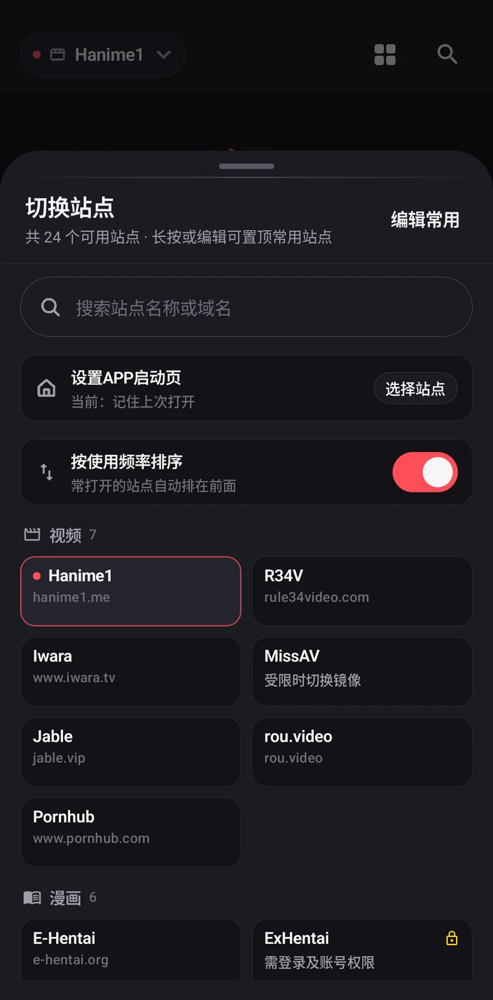
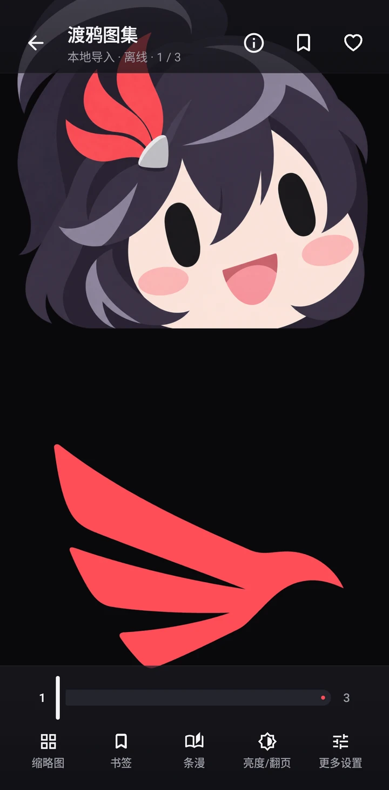
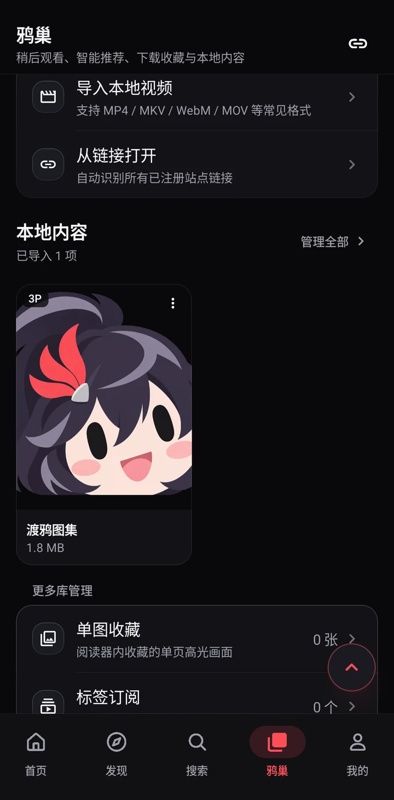

多站点浏览与搜索
按站点浏览分类与排行，也可以指定多个来源一起搜索。支持中英标签联想、标签屏蔽和保存搜索条件。常用站点可长按拖动排序。
一个 App，浏览视频、漫画与图集
跨站搜索想看的作品，接着上次的进度播放或阅读。把喜欢的内容收进鸦巢，也能下载到设备，留到离线时慢慢看。
站点的原生分区和排行榜保留各自特色。搜索、收藏、播放和阅读使用统一的操作方式。
按站点浏览分类与排行，也可以指定多个来源一起搜索。支持中英标签联想、标签屏蔽和保存搜索条件。常用站点可长按拖动排序。
支持画中画、手势调节、倍速、播放队列、A–B 循环与睡眠定时器。
支持条漫、从左向右、从右向左及双页阅读。连载漫画在条漫模式中可预载下一话，继续向下阅读。
在鸦巢管理收藏、稍后观看和本地内容。作品点赞保存在本地，智能推荐会参考点赞作品的标签。
长按作品可加入下载队列。支持导入本地视频、图片目录和 CBZ / ZIP 漫画包。
支持密码加密备份、恢复和 WebDAV 同步。站点会话由设备上的加密会话库管理。需要时可启用无痕模式、应用锁与防截屏。
点击截图查看大图。阅读器和本地库使用渡鸦图集作为演示内容。

查找来源、编辑常用站点和选择启动页。

连续下滑阅读，通过缩略图或页码快速跳转。

导入漫画包和媒体文件，在本地管理与阅读。
查看近期更新摘要，或浏览 GitHub 完整发布记录。
Android 7.0+ · APK 7.57 MiB · com.raven.app
两个下载渠道的安装包摘要相同，可用下方数值核对下载文件。
9b41d473bbe3fad7354e9ac17aa0ac027cd24e3f73232012196a626038695fd1
应用内可在「设置 → 反馈问题」附带诊断日志。这里也可以直接提交，内容进入同一后台。